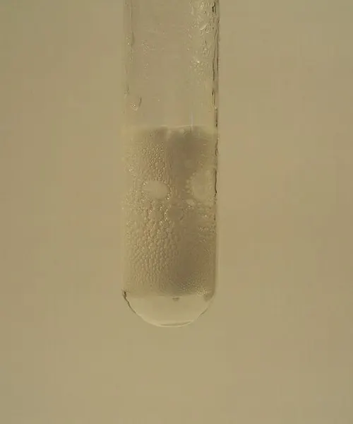
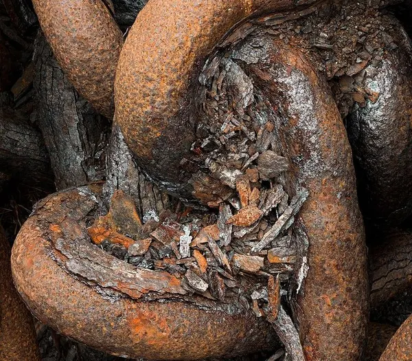

Cambridge Primary Checkpoint · Science 0097 · Stage 6 · Chemistry
Chemical Reactions: Reactants, Products and Evidence
What a chemical reaction is, how to name reactants and products in a word equation, and the three pieces of evidence Checkpoint asks about: a gas being produced, a change in colour and a change in temperature.
British & IGCSE › Checkpoint 6 › Checkpoint 6 Science — Complete Course
- Understand that in a chemical reaction, substances called reactants interact (react) to make new substances called products. (6Cc.04)
- Observe and describe the evidence that a chemical reaction has happened: a gas is produced, the colour changes, or the temperature changes. (6Cc.05)
1. Key words
| Word / phrase | Meaning / use |
|---|---|
| chemical reaction | تفاعل كيميائي — a change in which new substances are made |
| reactants | المتفاعلات — the substances you start with, before the reaction |
| products | النواتج — the new substances made by the reaction |
| word equation | معادلة لفظية — reactants → products, written in words |
| evidence | دليل — something you observe that shows a reaction has happened |
| fizzing / effervescence | فوران — many bubbles of gas being produced |
| irreversible | غير عكسي — cannot be changed back to the starting substances |
| acid | حمض — e.g. vinegar or lemon juice; reacts with some substances (wear goggles) |
2. What is a chemical reaction?
In a physical change (melting, dissolving, boiling) the substance stays the same substance. In a chemical reaction, the starting substances react — their particles join up in a new way — and new substances are made. The new substances have different properties from the old ones.
- Reactants = the substances at the start (the ones that are used up).
- Products = the new substances made at the end.
- Most chemical reactions are irreversible: you cannot easily get the reactants back. A burnt match cannot become a match again; a cooked egg cannot be uncooked.
3. Writing a word equation
We show a reaction with a word equation. The reactants go on the left, the products on the right, and the arrow means "react to make". A plus sign (+) separates substances. Never use an equals sign.
| Reaction | Reactants | → | Products |
|---|---|---|---|
| A candle burning | wax + oxygen | → | carbon dioxide + water |
| Gas burning in a cooker | natural gas + oxygen | → | carbon dioxide + water |
| A nail rusting | iron + oxygen + water | → | rust |
| Magnesium in acid | magnesium + hydrochloric acid | → | magnesium chloride + hydrogen |
| Baking soda in vinegar | baking soda + vinegar | → | carbon dioxide + water + a new salt |
Oxygen from the air is a reactant in burning and rusting, even though you cannot see it. That is why a candle under a jar goes out, and why a nail kept in dry air with no oxygen and no water does not rust.
Everything before the arrow = reactants. Everything after the arrow = products. If a question asks "name one product", choose any one substance after the arrow — not the whole side.
4. Evidence of a chemical reaction
We cannot see particles, so we look for clues. At Stage 6 you must know three kinds of evidence:
| Evidence | What you observe | Examples |
|---|---|---|
| 1. A gas is produced | bubbles, fizzing, a balloon on the flask fills up | baking soda + vinegar; chalk + vinegar; magnesium + acid; baking powder making a cake rise |
| 2. A change in colour | the colour of the substance is different afterwards | grey iron → orange-brown rust; white bread → brown toast; a cut apple turns brown; a copper roof slowly turns green; clear egg white → white when cooked |
| 3. A change in temperature | the mixture gets hotter (or colder) — measure with a thermometer | burning gives out heat; magnesium + acid gets warmer; air-activated hand warmers (iron powder reacting with oxygen) get hot; baking soda + vinegar gets colder |

Temperature change: put a thermometer in the reactants, read it before mixing, then read it again after the reaction. Temperature change = higher reading − lower reading. Say whether it went up (got hotter) or down (got colder) — both are evidence.
- Boiling water makes bubbles, but the gas is still water (water vapour) — no new substance, so it is not a reaction.
- Heating water makes it hotter, but nothing new is made.
- Mixing blue and yellow paint makes green, but the paints are only mixed.
- Bubbles from a fizzy drink are gas that was already dissolved in it.
- So the evidence is a clue. The real test is: has a new substance been made?
التفاعل الكيميائي = مواد جديدة تتكون. المواد في البداية اسمها reactants (المتفاعلات) وتُكتب قبل السهم، والمواد الجديدة اسمها products (النواتج) وتُكتب بعد السهم. الأدلة المطلوبة ثلاثة فقط: خروج غاز (فقاعات/فوران)، تغير اللون، تغير درجة الحرارة (سخونة أو برودة).
5. Physical change or chemical reaction?
| Physical change | Chemical reaction | |
|---|---|---|
| New substance made? | no | yes |
| Can it be reversed easily? | usually yes (melting, freezing, dissolving, evaporating) | usually no (burning, cooking, rusting) |
| Examples | ice melting, salt dissolving, water boiling, wax melting | wax burning, bread toasting, iron rusting, milk going sour |
| What you might see | change of state or shape; the substance is still the same | gas made, colour change, temperature change |
A candle is a good example of both. The wax near the flame melts (physical, reversible: it sets again when it cools). The wax vapour in the flame burns (chemical: wax + oxygen → carbon dioxide + water), giving out heat and light.
6. Chemical reactions in everyday life
- Cooking: frying an egg, toasting bread and grilling meat all make new substances (the colour change shows this).
- Baking: baking powder reacts in the hot, wet cake mixture and makes carbon dioxide gas; the bubbles make the cake rise.
- Burning fuels: natural gas in a cooker, petrol in a car and wood on a fire react with oxygen and give out heat.
- Rusting: iron on bridges, cars and railings reacts with oxygen and water. Painting or oiling iron keeps the water and oxygen away.
- Food going bad: milk going sour and fruit going brown are slow reactions.

7. Gases have mass too
When a reaction makes a gas in an open flask, the gas escapes into the air and the balance reading goes down. The gas has mass, and it has left the flask. If a balloon (or a stopper) traps the gas, the reading stays the same, because nothing has left. Mass lost = starting mass − final mass.
8. Worked examples
Worked example 1 — Look at the word equation: magnesium + oxygen → magnesium oxide. (a) Name the two reactants. [1] (b) Name the product. [1] (c) Why is this a chemical reaction? [1]
- (a) The reactants are before the arrow: magnesium and oxygen.
- (b) The product is after the arrow: magnesium oxide.
- (c) A new substance (magnesium oxide) is made.
- Common mistake: writing "magnesium oxide" as a reactant because it contains the word magnesium. Look at which side of the arrow it is on.
Worked example 2 — Yara adds iron filings to blue copper sulfate solution. After a few minutes the solution turns pale green, a brown-red solid forms on the iron, and the thermometer reading rises from 21 °C to 26 °C. Give two pieces of evidence that a chemical reaction happened. [2 marks]
- The colour changed (blue → pale green, and a red-brown solid appeared) (1).
- The temperature rose by 5 °C (26 − 21 = 5) (1).
- Exam tip: describe what you see ("the solution turned from blue to green"), not just "it changed".
Worked example 3 — Before Ziad mixes baking soda and vinegar the thermometer reads 21 °C. After mixing it reads 16 °C. (a) Calculate the temperature change. [1] (b) Is this evidence of a chemical reaction? Explain. [1]
- (a) 21 − 16 = 5 °C (a fall of 5 °C — the mixture got colder).
- (b) Yes — a change in temperature is evidence of a reaction; it can be a rise or a fall. (The fizzing, a gas being produced, is more evidence.)
- Common mistake: thinking only "getting hotter" counts.
Worked example 4 — A flask of vinegar and chalk has a mass of 210.0 g at the start. When the fizzing stops, the mass is 207.8 g. The flask was open. (a) Calculate the mass lost. [1] (b) Explain why the mass went down. [1]
- (a) 210.0 − 207.8 = 2.2 g.
- (b) A gas (carbon dioxide) was produced and escaped into the air from the open flask; the gas has mass, so the flask lost mass.
- Common mistake: "the mass was destroyed" or "gas has no mass". Gases do have mass.
Worked example 5 — Ahmed heats water in a kettle. It bubbles and gets hot. He says: "This is a chemical reaction because there are bubbles and a temperature change." Is he right? Explain. [2 marks]
- No, he is not right (1).
- No new substance is made — the bubbles are water vapour, which is still water; it can condense back into liquid water. Boiling is a physical (reversible) change (1).
- Mixing up reactants (start, left of the arrow) and products (end, right of the arrow).
- Using "=" in a word equation instead of "→".
- Forgetting oxygen as a reactant in burning and rusting.
- Saying "it changed" — always describe the evidence: what gas/bubbles, which colours (from → to), how much the temperature rose or fell.
- Thinking a fall in temperature is not evidence — getting colder counts too.
- Calling boiling, melting or dissolving "reactions" — they make no new substance.
- Name the reactants / products from a word equation, or complete a word equation with a missing word.
- What is the evidence? — from a description, picture or results table: bubbles/gas, colour change, temperature change.
- Read two thermometers and work out the change — show the subtraction and write °C.
- Change in mass — subtract and explain that a gas escaped.
- Tick the chemical reactions in a list — look for new substances (burning, cooking, rusting, baking).
- Safety — wear eye protection with acids; never taste chemicals.
Practice
- Chemical reaction = new substances are made; usually irreversible.
- Reactants (start) → products (new). Word equations use + and →, never =.
- Evidence at Stage 6: a gas is produced (bubbles/fizzing), a colour change, a temperature change (up or down).
- Bubbles or heating alone are not proof: ask whether a new substance was made.
- In an open flask the gas escapes, so the mass goes down — gases have mass.
All pages in this course
Start here
- Checkpoint 6 Science: The Test and How to Prepare
- Thinking and Working Scientifically: Investigations, Variables, Tables and Graphs
Biology
- The Heart and Circulatory System
- The Lungs and Respiratory System
- Human Reproductive System and Puberty
- Diseases, Hygiene and the Body's Defences
- Food Chains, Food Webs, Energy and Toxins
Chemistry
- Properties of Substances: Melting and Boiling Points, Gases, Conductors
- Reversible Changes and Dissolving
- Boiling and Evaporation
- Chemical Reactions: Reactants, Products and Evidence
Physics
- Mass, Weight and Gravity
- Force Diagrams and Forces on Moving Objects
- Floating and Sinking
- Light: Reflection and Refraction
- Electric Circuits, Symbols, Series and Parallel
Earth and space
Practice tests